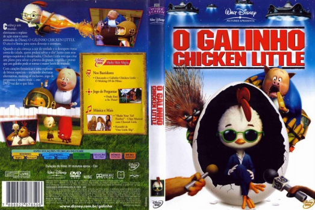

Outro Título:Chicken Little
País:United States, 81 minutos
Idiomas falados:Inglês, Português
Gênero(s):Animação, Família, Comédia
Diretor(s):Mark Dindal
Escritor(es):Steve Bencich, Ron Anderson, Ron J. Friedman
Codec:MPEG-2 (DVD)
Número: 5848

Certificado:L
Sinopse:
Chicken Little é um galo cheio de imaginação que apronta as maiores confusões. Um dia, ele provoca pânico generalizado na cidade onde vive, ao confundir a queda de uma avelã com um pedaço do céu despencando. Após a verdade vir à tona, o galinho perde todo o crédito junto aos habitantes. Porém, quando um pedaço do céu realmente cai em sua cabeça e ele identifica que se trata de um alienígena, Chicken Little precisa salvar a cidade sem fazer com que todos entrem em pânico mais uma vez.
Elenco:

Tipo de mídia: DVD5,
Legendas: Inglês, Português, Sem Legendas
Alugado: Não
Tela: Anamorphic Widescreen